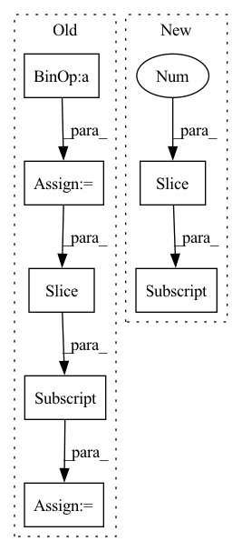

Pattern ID :33006
Before Change
for i in range(1, num + 1):
start = piece_length * (i - 1)
end = piece_length * i
piece = spec[:, start:end]
if i == num:
piece = spec[:, start:]
freq(piece)
time(piece)
After Change
return spec
else:
chunks = torch.split(spec, chunk_size, dim=1)
to_be_masked = torch.stack(list(chunks[:-1] ), dim=0).unsqueeze(1)
time_mask(to_be_masked)
freq_mask(to_be_masked)
masked = to_be_masked.squeeze(1).permute(1, 0, 2).reshape((spec.shape[0], -1))In pattern: SUPERPATTERN
Frequency: 3
Non-data size: 7
Instances Fragment ID: 95481777
Project Name: ivankunyankin/quartznet-asr
Commit Name: 28f999e7cfbefb66c9545f32e76a7454a7432aac
Time: 2021-07-01
Author: IKunyankin@gmail.com
File Name: utils.py
M Class Name: AnonimousClass
N Class Name: AnonimousClass
M Method Name: augment(4)
N Method Name: augment(4)
M Parent Class:
N Parent Class:
M File Name: utils.py
N File Name: utils.py
M Start Line: 57
M End Line: 82
N Start Line: 57
N End Line: 74
Before Change
Crops dimensions sized part from center.
c = dimensions / 2
x = c[1] - w / 2
y = c[0] - h / 2
img_cropped = img[y:(y + h), x:(x + w)]
return img_cropped
def get_padding_size_for_rotation(dimensions):After Change
def crop_center(img, dimensions):
// TODO: only tested on width>height images.
Crops dimensions sized part from center.
cx, cy = tuple(np.array(img.shape[0:2] ) / 2) // TODO: could be passed from rotate_and_crop_map instead of computing again
img_cropped = img[math.floor(cy - dimensions.height / 2):math.floor(cy + dimensions.height / 2),
math.floor(cx - dimensions.width / 2):math.floor(cx + dimensions.width / 2)] // TODO: use floor or smth else?
assert (img_cropped.shape[0:2] == dimensions.height, dimensions.width), "Something went wrong when cropping the " \ Fragment ID: 95481793
Project Name: hmakelin/gisnav
Commit Name: 835c42aa96e7aa8d5d08c65183b2db738ed3a35d
Time: 2021-11-01
Author: hmakelin@protonmail.com
File Name: wms_map_matching/util.py
M Class Name: AnonimousClass
N Class Name: AnonimousClass
M Method Name: crop_center(2)
N Method Name: crop_center(2)
M Parent Class:
N Parent Class:
M File Name: wms_map_matching/util.py
N File Name: wms_map_matching/util.py
M Start Line: 289
M End Line: 292
N Start Line: 295
N End Line: 299
Before Change
em = utils.helpers.var_or_cuda(torch.zeros(B, K, H, W))
for i in range(B):
begin = sum(n_objects[:i])
end = begin + n_objects[i]
em[i, 0] = torch.prod(1 - ps[begin:end], dim=0) // bg prob
em[i, 1:n_objects[i] + 1] = ps[begin:end] // obj prob
em = torch.clamp(em, 1e-7, 1 - 1e-7)
logit = torch.log((em / (1 - em)))After Change
em = utils.helpers.var_or_cuda(torch.zeros(1, K, H, W))
em[0, 0] = torch.prod(1 - ps, dim=0) // bg prob
em[0, 1:n_objects + 1] = ps // obj prob
em = torch.clamp(em, 1e-7, 1 - 1e-7)
logit = torch.log((em / (1 - em)))
return logit Fragment ID: 95481787
Project Name: hzxie/rmnet
Commit Name: c5d14d38f8099d8ea0ad359d904cdd70c3642ee6
Time: 2020-04-11
Author: root@haozhexie.com
File Name: models/stm.py
M Class Name: STM
N Class Name: STM
M Method Name: soft_aggregation(3)
N Method Name: soft_aggregation(4)
M Parent Class: torch.nn.Module
N Parent Class: torch.nn.Module
M File Name: models/stm.py
N File Name: models/stm.py
M Start Line: 261
M End Line: 272
N Start Line: 264
N End Line: 266